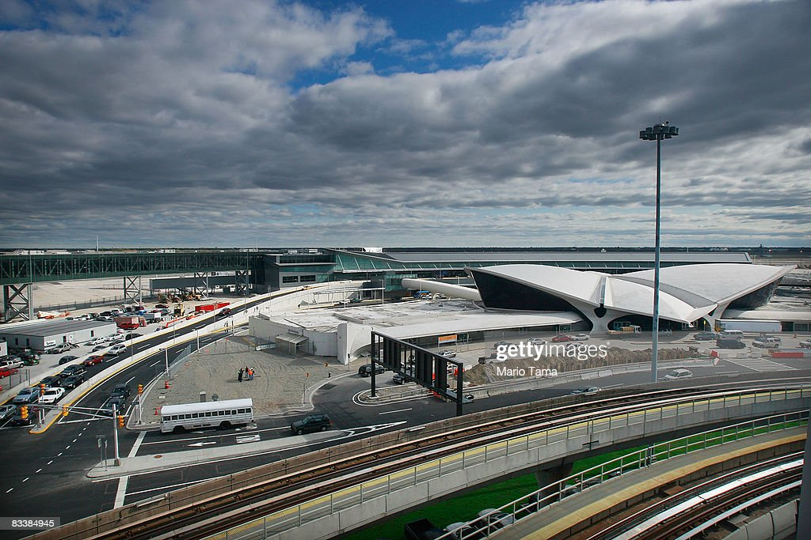

Collisions between wildlife and airplanes happen every day, no matter where in the world. Whether it be a private or commercial plane, that collides with wildlife, the number of wildlife strikes raises concerns for air travel safety and animal safety, according to fws.gov.
Wildlife collisions have been recorded since 1990 by the Federal Aviation Administration (FAA), for all U.S. states and territories as well as areas in Canada. The FAA reveals that during December of 2021 through October of 2022, there were 476 wildlife collisions with airplanes in New York.
Airplane pilots or maintenance workers who find animal remains or encounter a collision keep reports and detailed notes during or after an occurrence called "remarks". They reveal what took place during the strike and what, if any, damage happened to the aircraft.
The airports in New York with the highest number of collisions this past year were John F Kennedy International Airport (JFK) , LaGuardia Airport and Westchester County Airport. The FAA also reveals that the airlines that are stationed in New York airports with the most wildlife collisions were JetBlue Airways , Delta Airlines and Endeavor Airlines , a subsidiary of Delta Air Lines.
John F Kennedy Airport and JetBlue Airlines Strike the Most Wildlife in New York

JetBlue Opens Its New Terminal 5 at JFK Airport
gettyimages/Mario Tama
The FAA reports that out of all airplanes departing and approaching a New York airport, 40% of all collisions that took place were local to JFK, which was 189 out of 476 collisions. Fulton County Airport and Schenectady County Airport were amongst the bottom few who had only one collision this past year.
JFK is reported to be the ninth biggest airport in the United States according to webuildvalue.com, and with 5190 acre coverage and about 60 million passengers it carries each year, JFK is bound to have a higher number of collisions than other airports because of its size. Additionally, JFK is located near a wildlife sanctuary and a wildlife refuge and is on route for migrating birds, which creates an even higher chance for collisions to happen.
JFK is approximately 6.5 miles away from The Jamaica Bay Wildlife Refuge , which according to nps.gov includes over 9,000 acres of water, woods and bays. It is one of the largest bird habitats in the northeastern United States and sees heavy seasonal bird migration. Furthermore, JFK resides 27.2 miles away from the JFK Memorial Wildlife Sanctuary , which is 500 acres of tidal wetlands that provides a home and migratory resting place for waterfowl and many other birds, according to liherald.com.
According to Bird Strike Committee USA , three types of birds represent 75% of all reported bird strikes: waterfowl (31%), gulls (26%) and raptors (18%), all of which can be found at the JFK Memorial Wildlife Sanctuary and The Jamaica Bay Wildlife Refuge.
JetBlue Airways is stationed at eight New York airports and is the sixth largest domestic airline in the United States, accounting for 5.3% of the domestic market in 2021, according to statista.com. JetBlue Airways has been responsible for about 20% of all wildlife collisions among airlines in New York, excluding the collisions where the airline that collided with the bird is unknown.
Wildlife collisions happen for several reasons beginning with the fact that airplanes share the sky with wildlife and encountering wildlife while in the sky is inevitable. Most collisions can be explained by the ever increasing and evolving in aircraft, bird populations and air traffic.
Due to high speeds, time of day, phase of flight and location of airports or airplanes in the sky, varying types of wildlife are eligible to collide with airplanes. Other factors such as time of year and the size and of airports play a role in the number of collisions.
The FAA reveals that collisions are more likely to happen during daylight hours, upon arrival at an airport at low altitudes, during cool to warm months and during clear days with no rain or cloud cover. These times overlap with times that wildlife migrate and reside during the day. Many collisions result in no human fatalities or injuries, but it has been reported in the past.
Types of wildlife that are struck range from bats to birds to coyotes, either in the air or on the runway. The FAA reveals that the most struck animals are small birds namely, the Mourning Dove, the American Kestrel, and the Barn Swallow.
"I have seen birds fly up to 10,000 feet, but normally they get hit at low attitudes, 90% of collisions happen when landing, takeoff and or on the runway,” said Joseph Neglia, airplane pilot and Lt. Col. “It is the birds that are hovering over the runway at low altitude that get hit.”
About 19% of all collisions recorded this past year resulted in the animal being unknown. This is due to the possibility of the animal getting destroyed by the airplane, the inability to recognize species during or after the occurrence or the animal flying away or dropping out of the sky. According to fws.gov , collisions between planes and birds are estimated to account for a small percentage of all bird deaths per year.
The FAA records reveal that wildlife collisions happen with to highly populated airports and domestic airlines, which are commercial planes that fly at lower altitudes. The location of the airports also contributes to how many animals are struck, and does not reflect the safety of specific airports, airlines or airplanes.